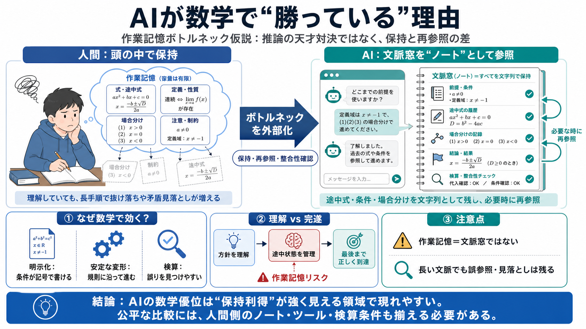

Claim（主張）
作業記憶がボトルネック
理解していても、「正しい帳尻合わせ」まで到達できないことが起きる。

理解していても、「正しい帳尻合わせ」まで到達できないことが起きる。
条件の抜け落ち・計算ミス・矛盾の見落としが、長い証明で増えやすい。
途中状態を頭の中で保ち続け、更新しながら進める。
履歴を文字列として残し、必要に応じて再参照しながら進める。
同じ状態を参照し直し、整合性を取りながら進めやすい。
知能対決ではなく、記憶ボトルネックの扱い方の差になる。
重要情報が記号として書き下されやすい。
仮定や変形が、ルールに沿って扱える。
途中の矛盾や誤りを検査しやすい。
「わかっている」ことと「最後まで誤りなく到達」することは別問題。
長手順ほど、抜け落ちや矛盾の見落としが起きやすい。
検算できるため、外部ノート的参照が効きやすい。
同じ“記憶利得”では進展しにくい。
“理解”と“完遂”のズレがミス率を上げる。
長鎖推論での記録保持の失敗が減る。
保持と再参照が有利になる。
社会問題では因果の不確実性が残る。
人間は能動的更新、AIは参照寄りで性質が異なる。
推論の勝利というより認知アーキテクチャの勝ち筋。
必要情報を“後から拾える”ことで、途中管理の失敗が減る。
人間側の外部メモリ（紙・ツール）を同等にしないと結論が歪む。
内部で保持し、選び、更新し続ける。
書かれた状態を参照し、条件づけに使う。
参照できても、必要部分に届かない失敗が残る。
人間側に外部補助と検算手段を与えるほど差が縮まる可能性がある。
作業記憶容量が長手順の成績に与える影響、理解と実行の分離。
外部メモリ的参照、長文脈での有効参照・誤参照。
人間側のノート/ツール付与、AI側の条件統制、検証手段の揃え。
数学（明示・検算）と社会（因果・意味の不確実性）の差。
No references found